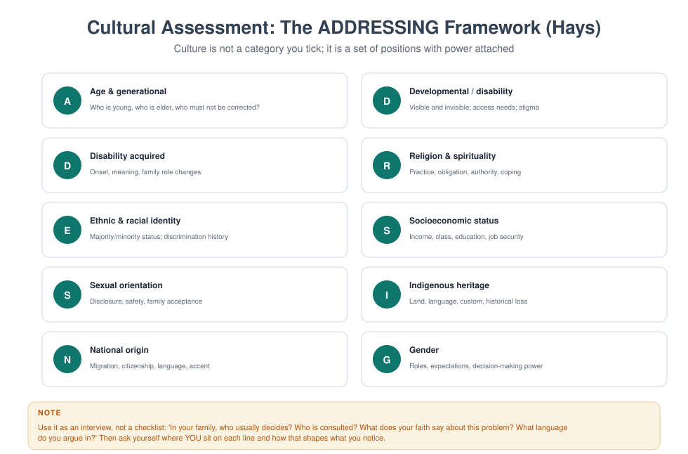
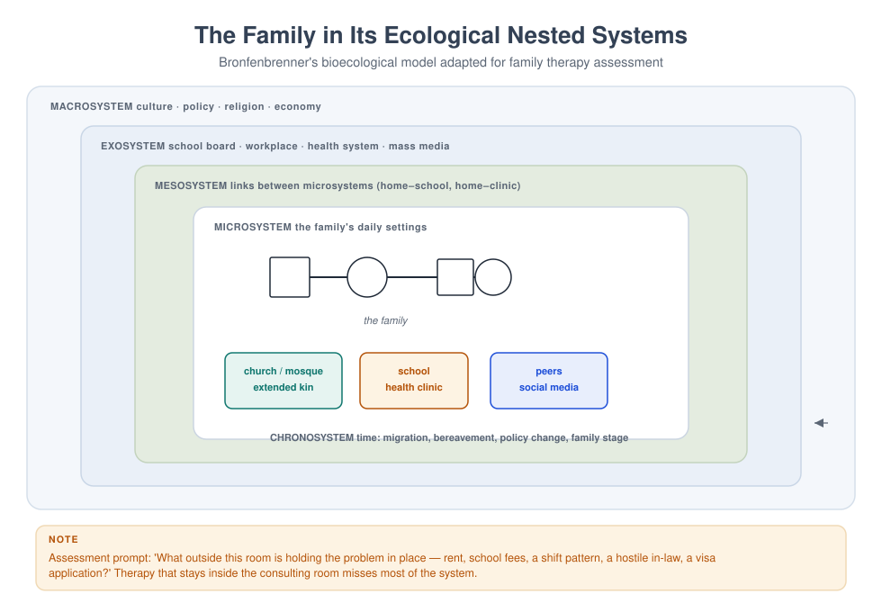

MFT 708 — Cultural Competence in Therapy
Course leader's summary. Culture is not a topic added to therapy; it is the medium in which therapy happens. This course moves you from "knowing about cultures" to working skilfully with difference, power and meaning — including your own.
How to use this book
You will be uncomfortable at points in this course. That is not a design flaw; it is the learning. Each week pairs a concept with a practice that requires you to examine your own position. Do the exercises honestly and keep them private — this is formation, not performance.
1. Course description
The field's language has shifted from cultural competence (a set of knowledge and skills, often taught as a list of group traits) to cultural humility (a lifelong process of self-examination, redress of power imbalance, and institutional accountability) and cultural safety (the outcome judged by the person receiving care).
This course teaches all three, and is honest about their limits. It covers race and racism, ethnicity, religion and spirituality, class and poverty, gender and power, sexuality, disability, migration and displacement, language and interpreting, and the intersection of all of these in a single family.
2. Learning outcomes
| # | Outcome | Assessed |
|---|---|---|
| LO1 | Distinguish cultural competence, humility and safety, and use each appropriately | Exam |
| LO2 | Conduct a cultural assessment using a structured framework | Observed interview |
| LO3 | Analyse power, privilege and intersectionality in a clinical relationship | Reflective portfolio |
| LO4 | Work effectively with interpreters and in a second language | Skills assessment |
| LO5 | Adapt assessment and intervention to extended-family, faith-based and polygynous structures | Case analysis |
| LO6 | Recognise and interrupt racism, ethnocentrism and bias in your own practice | Portfolio, viva |
| LO7 | Critically appraise the cultural assumptions of the major therapy models | Essay |
3. Assessment
| Component | Weight | Due |
|---|---|---|
| Reflexive portfolio (6 entries × 400 words) | 30% | Fortnightly |
| Cultural assessment observed interview (25 min) | 25% | Week 9 |
| Case analysis with cultural formulation (2,500 words) | 45% | Week 14 |
4. The fourteen-week plan
| Week | Topic | Practice |
|---|---|---|
| 1 | What culture is — and is not | Cultural genogram (own family) |
| 2 | Competence, humility, safety: history and critique | Concept comparison |
| 3 | The ADDRESSING framework | Structured cultural interview |
| 4 | Race, racism and the clinical encounter | Microaggression analysis |
| 5 | Ethnicity, tribe, language and migration | Interpreter role-play |
| 6 | Religion and spirituality as clinical structure | Faith-history interview |
| 7 | Class, poverty and material reality | Budget exercise |
| 8 | Gender, power and the politics of the family | Power mapping |
| 9 | Cultural assessment observed interview | Assessed |
| 10 | Sexuality, gender identity and family acceptance | Coming-out family session |
| 11 | Disability, chronic illness and care | Accessibility audit |
| 12 | Polygyny, extended family and communal child-rearing | Structural adaptation |
| 13 | Decolonising therapy: models, manuals and evidence | Critical appraisal |
| 14 | Integration: your cultural position statement | Viva |
Week 1 — What culture is — and is not
Culture is the shared, learned system of meanings, practices, values and identities through which a group makes sense of the world. It is dynamic, internalised, contested and partially unconscious.
Five things culture is not.
- Not nationality. "Nigerian culture" contains hundreds of languages and dozens of marriage systems.
- Not a personality. Culture sets a range of possible behaviours, not a script every member follows.
- Not static. Families migrate, convert, intermarry and change class; their culture changes with them.
- Not only "the other". You have a culture too, and so does your profession.
- Not an excuse. "That is our culture" can describe a practice or justify coercion; the therapist must be able to hold respect and moral clarity at the same time — particularly about violence.
The clinical implication. Never ask "what do people from X do?" Ask "what does this family do, what does it mean to them, who in the family disagrees, and how does it interact with the problem?"
Week 2 — Competence, humility, safety
| Concept | Core claim | Strength | Limitation |
|---|---|---|---|
| Cultural competence | Knowledge and skills about groups can be taught | Practical, trainable | Risks stereotyping; assumes culture is a trait |
| Cultural humility | Lifelong self-reflection, redress of power, institutional accountability | Attends to power and to the self | Can become inward-looking; hard to assess |
| Cultural safety (Ramsden) | The recipient judges whether care is safe | Centres the client's experience | Requires institutional change, not only individual skill |
The synthesis used in this programme. Humility as the stance, competence as the skills, safety as the criterion. You reflect on your position (humility), use structured tools and knowledge (competence), and ask the family whether the encounter was safe (safety).
Why "I treat everyone the same" is not an ethical position. Treating everyone the same preserves the advantages of the majority, because the default is not neutral — it was built for someone.
Week 3 — The ADDRESSING framework

Hays's framework asks you to assess ten dimensions, for the family and for yourself:
Age and generation · Developmental disability · Disability acquired later · Religion and spirituality · Ethnic and racial identity · Socioeconomic status · Sexual orientation · Indigenous heritage · National origin · Gender.
Interview prompts that work.
- "In your family, who usually decides? Who is consulted? Who is told afterwards?"
- "What does your faith say about this problem? Who in your religious community knows?"
- "Which language do you argue in? Which language do you pray in?"
- "When you were growing up, was money talked about?"
- "What did your family teach you about people from [another group]?"
The power question. For each dimension, ask: is this person in the majority or the minority in this society, in this clinic, and in this room? The same person may be privileged on one axis and marginalised on another — this is intersectionality.
Week 4 — Race, racism and the clinical encounter
Definitions. Race is a social category with no biological basis; its effects are nonetheless real and measurable. Racism is the system of advantage and disadvantage organised around race, operating at interpersonal, institutional and internalised levels.
Three clinical implications.
- Racism is a chronic stressor with health consequences — including hypertension, depression, and adverse birth outcomes. It belongs in the assessment, not in a footnote.
- Therapy is not a racism-free space. Families may test you, protect you, or perform for you. Ask: "Have you had experiences in health settings where you were treated badly because of your background?"
- Microaggressions occur in clinical settings — comments, assumptions, lowered expectations. They are often unintentional and are still harmful.
Four common therapist failures.
| Failure | Example | Repair |
|---|---|---|
| Colour-blindness | "I don't see race" | Acknowledge difference; ask about its meaning here |
| Defensiveness | "I'm not racist, but…" | Focus on impact, not intent |
| Over-attribution | Explaining everything by race | Differentiate race from other factors |
| Exoticising | Treating the family as a cultural exhibit | Ask about ordinary life too |
Talking about race when it has not been mentioned. Wait for a cue, then ask directly: "I wondered whether the fact that I am [X] and you are [Y] matters here. Sometimes it does, sometimes it doesn't." Offering the question is often more important than the answer.
Week 5 — Ethnicity, tribe, language and migration
Ethnicity and tribe. In Nigeria and across Africa, ethnic identity carries histories of majority/minority relations, language, land, and in some cases conflict. Ask about it as a relationship question: how do the two families regard each other's ethnicity? Was the marriage contested? Whose language do the children speak?
Migration. Migration is a family event, not an individual one. Key clinical themes:
- Split households — one parent abroad, children with grandparents, "sent" children.
- Role reversal — children who acquire the new language become the family's intermediaries.
- Loss of the extended-family buffer — the practical support that made parenting possible.
- Status loss — a professional who becomes a cleaner; a respected elder who becomes invisible.
- Legal precarity — the constant threat of removal, which changes every decision.
Language. A family may think in one language about emotion and another about work. Ask: "In which language do you feel most like yourself? Which language do you dream in?" Offer sessions in the family's preferred language where you can; where you cannot, use an interpreter properly.
Working with interpreters — the standard.
- Brief before: purpose, confidentiality, first-person interpretation, do not summarise or advise.
- Seat the interpreter beside you, facing the family.
- Speak to the family, not to the interpreter ("How do you feel?" not "Ask her how she feels").
- Allow longer for interpretation; do not fill pauses.
- Debrief afterwards: what was difficult, what was not said, any cultural information.
- Never use a child as interpreter for anything clinical.
Week 6 — Religion and spirituality as clinical structure
In most of the world, faith is not an "aspect" of family life; it is the organising framework. Asking about it is not optional.
What to ask. What is your faith? How does it shape daily life (prayer, diet, dress, holy days)? What does it say about marriage, divorce, sex, mental illness, healing, and death? Who is your religious authority? Have you consulted them about this problem? What did they say?
Three clinical patterns.
- Faith as resource. Community, meaning, ritual, forgiveness, hope, practical support.
- Faith as stressor. Guilt, prohibition of divorce, deliverance beliefs that attribute mental illness to sin, conflict between religious and medical models.
- Faith as site of conflict. A couple from different traditions; conversion; a teenager leaving the faith; a pastor's authority competing with the therapist's.
Coordination, not competition. With consent, a conversation with the family's pastor, imam or elder can be more powerful than any technique. The aim is a shared plan, not a theological debate. You do not have to share the family's beliefs to take them seriously; you do have to be honest about your own.
Week 7 — Class, poverty and material reality
The clinical error. Reading the effects of poverty as individual or family pathology: "inconsistent parenting" when the mother works three jobs; "neglect" when the family has no electricity; "disorganised" when the household has eight people in two rooms.
What to ask, without humiliating.
- "Is money tight at the moment? How tight?"
- "What happens at the end of the month?"
- "Who else depends on your income?"
- "Have you ever had to choose between food and a bill?"
Practical action. Have a short list of referral routes: food support, school fee assistance, legal aid, social welfare, health insurance. A therapist who ignores material reality becomes part of the family's helplessness.
The class position of therapy itself. Sessions cost money, require transport and time off, and are conducted in a register many families do not use. Adapt: flexible times, community venues, shorter paperwork, plain language, a written summary the family can keep.
Week 8 — Gender, power and the politics of the family
Power is not the same as influence. Ask: who decides, who is consulted, who is informed, who is financially dependent, who can leave, who would be believed if they spoke?
Gender patterns you will meet.
| Pattern | Presentation | Clinical risk if ignored |
|---|---|---|
| Traditional division of labour | Mother "does everything" and is exhausted; father "does nothing" | Therapist aligns with mother; father withdraws further |
| Head-of-household ideology | Father decides; mother adapts | Mother's distress is invisible; children learn silence |
| Female economic power | Wife out-earns husband | Status threat becomes the real argument |
| Male emotional restriction | He cannot say what he feels | Therapist misreads flatness as lack of love |
The feminist critique that changed the field (Hare-Mustin, Goldner, Walters): early family therapy described "circular" patterns as though both parties had equal power. In violence, in economic dependence, and in cultural constraints, they do not. A circular description that ignores power becomes a sophisticated form of blame-the-victim.
Clinical practice. Name the asymmetry without moralising; ask the family whether they want it to be this way; work with the person who holds more power to use it differently; never insist a woman "communicate better" as a substitute for a man changing his behaviour.
Week 9 — Cultural assessment observed interview
Twenty-five minutes, assessed against six criteria: use of a structured framework, curiosity rather than assumption, power-attentiveness, no stereotyping, integration of culture with the presenting problem, and a respectful close.
Week 10 — Sexuality, gender identity and family acceptance
The clinical reality. In many settings, disclosure is unsafe, and families are torn between religious conviction, social pressure, and love for their child. Your task is not to resolve that for them but to make the conversation possible and to keep everyone safe.
Principles.
- Do not assume or ask for labels prematurely. Follow the client's language.
- Assess safety first. Is it safe at home, at school, at church? Who knows? What is the risk of disclosure?
- Work with the family's ambivalence, not against it. "You have both said you love your son. You have also said you cannot accept this. I want to understand both, without asking you to give either up today."
- Never promise a family you will change the child, and never promise a child you will change the family. Be honest with both.
- Know your legal context and your local referral routes, including safe medical and mental health services.
When the family rejects. Rejection is a process with stages: shock, denial, negotiation, and — in some families — accommodation. Your job is to keep the door open, reduce harm, and protect the most vulnerable member.
Week 11 — Disability, chronic illness and care
Two models. The medical model locates disability in the body; the social model locates it in barriers — physical, attitudinal, institutional. Both matter clinically.
Assessment questions. What is the diagnosis and functional impact? Who provides care, and at what cost? What has the family had to give up? What is the meaning of the condition in this family's belief system (punishment, test, curse, genetics)? What accommodations are needed?
Avoiding two errors. Minimising ("it's not that bad") and catastrophising ("your life is over"). Ask the person directly: "What do you want me to understand about how this affects you?"
Sibling and parent impact. Caregiving burden falls unequally; siblings of disabled children often develop precocious competence and unspoken resentment. Name it as love and loss together.
Week 12 — Polygyny, extended family and communal child-rearing
Do not treat structure as pathology. Household forms that differ from the Western nuclear norm are not automatically dysfunctional. Assess function, safety and fairness within the form.
Polygynous households — assessment prompts.
- Who lives where, and who decides?
- How are resources and time allocated? Who keeps the accounts?
- What are the relationships between wives — allies, rivals, or both?
- How do children understand their relationships to the other wives?
- Is the marriage legal under a statutory, customary or religious system (the answer affects rights)?
- Who in the household holds authority over the children?
Clinical themes that recur: jealousy and comparison, resource competition, co-wife coalitions and sub-coalitions, children as messengers, unequal treatment, and the husband's role as the only permitted channel of communication.
Communal child-rearing. In many families, a child is raised by a grandmother, an aunt, or a foster kin network. This can be protective (multiple attachment figures) or risky (unclear responsibility, unspoken injury). The question is not "who is the mother?" but "who is responsible for what, and does the child know who to go to?"
Week 13 — Decolonising therapy
The critique. Most of the therapy models in this programme were developed in North America and Europe, tested on samples that were not representative, and then exported as universal. Three specific problems:
- Normative assumptions. Individuation, self-expression and boundary-setting are treated as health. In many families, interdependence, duty and discretion are the markers of maturity.
- Evidence hierarchies. Trials and manualised models carry more status than community knowledge and qualitative research, which subtly determines what can be funded and taught.
- Language. "Enmeshment", "over-involvement", "dependence" are not neutral words; they encode a picture of the good family.
Responses that are more than rhetoric.
- Learn the local literature; cite African scholars; test instruments locally.
- Adapt models explicitly and say what you changed and why.
- Use the family's language and concepts in formulation.
- Include community and faith resources in treatment plans.
- Publish your adaptations so the field's evidence base changes.
And a caution. Decolonisation is not the replacement of one orthodoxy with another. Families are not monoliths, and "that is our culture" can silence a woman or a child as effectively as a Western manual can.

Week 14 — Integration: your cultural position statement
Write 1,000 words: your cultural identities and their advantages and disadvantages; two families with whom you would struggle and why; the adaptations you will make; the assumptions of your preferred model that you will watch; and how you will know when you have got it wrong. Present it in a viva.
Signals that you have got it wrong (learn to recognise them): the family is polite and does not return; you are doing most of the talking; you have explained their culture to them; you feel defensive; you have used the word "they".
Glossary
Cultural humility — a lifelong stance of self-examination and redress of power imbalance. Cultural safety — the recipient's judgment that care is safe and free of assault on identity. Cultural formulation — a structured account of culture in a presentation (e.g. the DSM-5 CFI). Ethnocentrism — judging another culture by the standards of one's own. Intersectionality — the interacting effects of multiple social positions. Microaggression — a brief, commonplace indignity, often unintentional. Power — the capacity to influence decisions, resources and meanings; distinct from influence. Stereotype threat — the risk of confirming a negative stereotype about one's group. Structural competency — the capacity to recognise and act on upstream social determinants.
Self-assessment
Multiple choice
1. "I treat everyone the same" is inadequate because: (a) it is impossible (b) the default is not neutral (c) clients dislike it (d) it is illegal
2. Cultural safety is judged by: (a) the therapist (b) the institution (c) the recipient of care (d) the code of ethics
3. Asking a family "what does your faith say about this problem?" is: (a) inappropriate (b) essential assessment (c) only for religious therapists (d) a legal requirement
4. An interpreter should: (a) summarise key points (b) interpret in the first person (c) advise the family (d) be the family's child
5. The social model of disability locates disability primarily in: (a) the body (b) barriers in society (c) genetics (d) family dynamics
6. A circular formulation that ignores power risks: (a) complexity (b) blaming the less powerful partner (c) over-diagnosis (d) cultural sensitivity
7. Intersectionality refers to: (a) cultural competence (b) interacting social positions (c) bilingualism (d) family structure
8. A family arrives with a co-wife arrangement. The therapist should first: (a) assess for pathology (b) endorse the arrangement (c) assess function, safety and fairness within the structure (d) refuse to work with them
9. Microaggressions in clinical settings are: (a) always intentional (b) often unintentional and still harmful (c) rare (d) not clinically relevant
10. Decolonising therapy means: (a) rejecting all Western models (b) adapting and testing models, citing local knowledge, changing the evidence base (c) using only local languages (d) avoiding diagnosis
Answer key
1 b · 2 c · 3 b · 4 b · 5 b · 6 b · 7 b · 8 c · 9 b · 10 b
Short answer
- Distinguish cultural competence, humility and safety in one sentence each.
- Write four ADDRESSING prompts you would actually use.
- What are the six steps of working with an interpreter?
- Give three clinical effects of racism and one assessment question.
- Name three culturally specific assumptions in EFT or structural therapy and how you would adapt them.
Essay (choose one, 2,000 words)
- "Cultural humility is a stance, not a technique." Discuss with reference to two clinical encounters.
- Critically examine the claim that family therapy models pathologise interdependence.
- Analyse a case in which your own cultural position shaped the assessment, and what you would do differently.
Further reading
- Hays, P. A. (2016). Addressing Cultural Complexities in Practice (3rd ed.). APA.
- Tervalon, M., & Murray-García, J. (1998). Cultural humility versus cultural competence. Journal of Health Care for the Poor and Underserved, 9(2), 117–125.
- McGoldrick, M., Giordano, J., & Garcia-Preto, N. (Eds.). (2005). Ethnicity and Family Therapy (3rd ed.).
- Falicov, C. J. (2014). Latino Families in Therapy (2nd ed.). Guilford.
- Ramsden, I. (2002). Cultural Safety and Nursing Education. Victoria University of Wellington.
- Brady, M. (Ed.). (2012). The Oxford Handbook of the Philosophy of Culture. OUP.
End of Semester One. Next: MFT 709 — Group Therapy Techniques